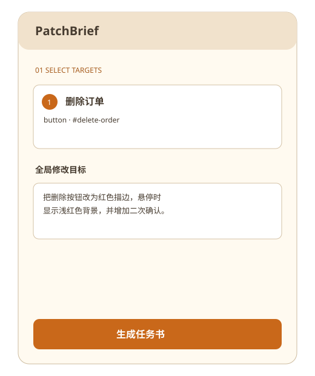

显示书签栏
Chrome / Edge: Ctrl/Cmd + Shift + B
选择页面位置，补充要求与代码，然后把结构化任务书交给 AI 编码助手。所有内容留在本地。

Chrome / Edge: Ctrl/Cmd + Shift + B
把 SpotBrief 按钮拖到书签栏。
打开普通网页或 localhost，点击书签。
只有在生成任务书时勾选“使用 AI 优化”，SpotBrief 才会把清理后的任务书发送到你配置的 OpenAI-compatible API。API Key 仅保存在此页面所属域名的浏览器存储中，不会写入书签或任务书。
默认不上传页面信息；启用 AI 优化后，仅向用户配置的 API 发送经过清理的任务书。
Chrome/Edge 完整支持；Firefox/Safari 提供核心流程。内部页面和跨域 iframe 受安全限制。
浏览器禁止 Bookmarklet 在 chrome://、edge://、扩展商店和新标签页执行。
不会。SpotBrief 只生成任务书。